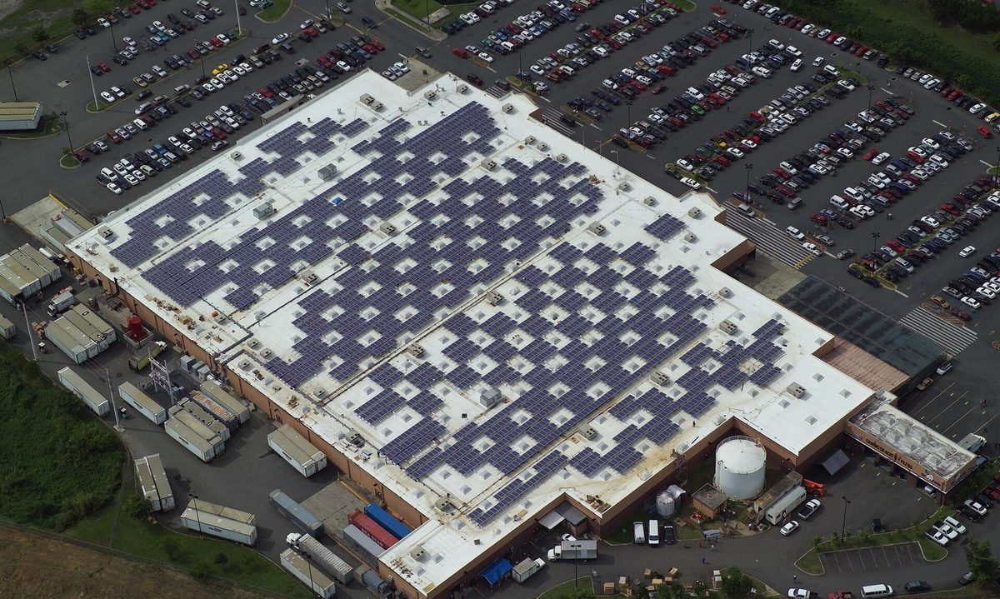

푸에르토리코 시민단체 카사 푸에블로, 지붕 태양광 남는 전기를 kWh당 7~8센트에 사들이는 '푸에블로 솔라' 제안

단체 집계 자가소비 태양광 약 26만1,000가구·분산 태양광 약 1,456MW로 메탄가스 발전 설비 1,391MW 넘어…송배전 운영사 매입 의무화·낮 시간 싼 요금·공동체 태양광과 협동조합으로 지붕 없는 가구도 참여
푸에르토리코의 공동체 기반 환경단체 카사 푸에블로(Casa Pueblo)가 가정·상가·공동체 모임이 지붕 태양광으로 만든 남는 전기를 전력망에 팔 수 있게 하자는 '푸에르토리코 푸에블로 솔라(Puerto Rico Pueblo Solar)' 제안을 내놓았다. 제안의 뼈대는 지금의 상계(넷미터링) 제도를 고쳐 자가소비보다 많이 생산하는 분산 태양광 생산자에게 규제된 전력구매계약으로 kWh당 7~8센트를 지급하고, 송배전 운영사 루마 에너지(LUMA Energy)나 그 뒤를 잇는 운영자가 열린 규제 시장에서 이 전기를 사도록 의무화하는 것이다. 카사 푸에블로에 따르면 섬에서 자가소비용 태양광을 단 가구는 약 26만1,000가구, 분산 태양광 합계는 약 1,456MW로, 단체가 인용한 미국 에너지정보청 자료 기준 메탄가스 발전 설비(1,391MW)보다 크고 석탄 발전(454MW)을 크게 웃돌지만 석유 발전(3,671MW)에는 못 미친다. 단체는 제안한 매입 단가가 지금의 연료조정요금보다 약 2.5배 낮아 공공 부채를 늘리지 않고 전기요금을 내릴 수 있다고 주장했고, 대규모 태양광·풍력이 보통 kWh당 16~21센트에 전기를 판다며 농지를 대형 재생에너지 부지로 쓰기보다 지붕과 도시 공간을 쓰는 편이 효율적이라고 밝혔다. 제안에는 태양광이나 배터리가 없는 소비자를 포함한 모든 소비자에게 낮 시간 낮은 요금을 적용하고, 공동체 태양광·에너지 협동조합·수익 공유 장치로 알맞은 지붕이나 돈이 없는 가구도 발전에 참여하게 하며, 길게는 공공·민간 화력발전소를 예비·비상용으로 돌리는 방안도 담겼다. 아르투로 마솔 데야(Arturo Massol Deyá) 사무총장은 서면 성명에서 "우리 시민은 투자하고 조직하고 전기를 생산할 능력을 이미 보여 줬다"며 망 운영자가 설비와 계통 연결 절차·제어 시스템을 고쳐야 한다고 요구했으며, 아직 시민단체의 제안 단계로 정부·규제기관이나 루마의 입장은 알려지지 않았다.
시민에너지 관점
시민이 제 돈으로 단 지붕 태양광이 섬의 메탄가스 발전 설비보다 크다는 단체의 계산은, 전력 전환의 주력이 이미 시민의 지붕 위에 올라와 있다는 뜻이다. 분산 전원이 늘면 망이 불안해진다는 우려가 나올 수 있지만, 이 제안은 망 운영자의 설비·제어 체계를 함께 고치고 낮 시간 싼 요금으로 수요를 태양광이 많은 시간대로 옮기는 길까지 묶어 내놓았다. 독일이 2000년 재생에너지법으로 고정가격 매입을 보장한 뒤 시민과 농민이 발전 설비의 주인으로 나섰듯, 시민이 만든 전기를 정당한 값에 사 주는 시장 규칙이 있어야 지붕 없는 가구까지 협동조합과 공동체 태양광으로 함께할 수 있다. 국내에서도 주택과 공동주택 지붕 태양광의 남는 전기를 이웃과 나누거나 공정한 값에 팔 수 있는 제도를 서둘러 만들어야 한다.
출처: The San Juan Daily Star 2026-11-05 The Star Staff 원문 보기
출처: El Nuevo Día 2026-11-04 Manuel Guillama Capella 원문 보기
창간 전 시험 발행 기사입니다.
プエルトリコの市民団体カサ・プエブロ、屋根置き太陽光の余剰電力をkWh当たり7～8セントで買い取る「プエブロ・ソーラー」を提案
団体集計で自家消費型太陽光は約26万1,000世帯、分散型太陽光は約1,456MWでメタンガス発電設備1,391MWを上回る…送配電事業者への買い取り義務化、昼間の安い料金、コミュニティ太陽光や協同組合で屋根のない世帯も参加
プエルトリコの地域密着型環境団体カサ・プエブロ（Casa Pueblo）が、家庭や商店、地域グループが屋根置き太陽光で作った余剰電力を送電網に売れるようにする「プエルトリコ・プエブロ・ソーラー（Puerto Rico Pueblo Solar）」案を打ち出した。提案の柱は、現行のネットメータリング制度を改め、自家消費を超えて発電する分散型太陽光の生産者に規制された電力購入契約でkWh当たり7～8セントを支払い、送配電事業者のルマ・エナジー（LUMA Energy）またはその後継の運営者に、開かれた規制市場でこの電気を買うよう義務づけることだ。カサ・プエブロによると、島内で自家消費用の太陽光を設置した世帯は約26万1,000世帯、分散型太陽光の合計は約1,456MWで、団体が引用した米エネルギー情報局のデータでは、メタンガス発電設備（1,391MW）より大きく石炭火力（454MW）を大きく上回るが、石油火力（3,671MW）には及ばない。団体は、提案する買い取り価格が現在の燃料調整料金より約2.5倍低く、公的債務を増やさずに電気料金を下げられると主張し、大規模な太陽光・風力は通常kWh当たり16～21セントで電気を売っているとして、農地を大型再エネ用地に使うより屋根や都市空間を使う方が効率的だと述べた。提案には、太陽光や蓄電池を持たない消費者を含むすべての消費者への昼間の低料金の適用、コミュニティ太陽光・エネルギー協同組合・収益分配の仕組みによる適した屋根や資金のない世帯の発電参加、長期的には公営・民間の火力発電所を予備・非常用に回す方策も盛り込まれた。アルトゥロ・マソル・デヤ（Arturo Massol Deyá）事務局長は書面の声明で「私たち市民は投資し、組織し、電気を生み出す力をすでに示してきた」と述べ、送電網の運営者に設備や系統接続の手続き、制御システムの改善を求めたが、まだ市民団体の提案段階で、政府や規制当局、ルマの立場は明らかになっていない。
市民エネルギーの視点
市民が自ら費用を出して設置した屋根置き太陽光が島のメタンガス発電設備より大きいという団体の試算は、電力転換の主力がすでに市民の屋根の上にあることを意味する。分散型電源が増えれば送電網が不安定になるとの懸念もありうるが、この提案は送電網運営者の設備・制御体制の改善と、昼間の安い料金で需要を太陽光の多い時間帯へ移す道まで併せて示している。ドイツが2000年の再生可能エネルギー法で固定価格買い取りを保証した後、市民や農家が発電設備の持ち主として名乗りを上げたように、市民が作った電気を正当な価格で買い取る市場のルールがあってこそ、屋根のない世帯まで協同組合やコミュニティ太陽光で参加できる。韓国でも、戸建てや集合住宅の屋根置き太陽光の余剰電力を近隣と分け合ったり公正な価格で売ったりできる制度を急いで作るべきだ。
出典: サンフアン・デイリー・スター（The San Juan Daily Star） 2026-11-05 The Star Staff 原文を読む
出典: エル・ヌエボ・ディア（El Nuevo Día） 2026-11-04 Manuel Guillama Capella 原文を読む
創刊前の試験発行記事です。
波多黎各民间团体卡萨普韦布洛提出"普韦布洛太阳能"方案，以每千瓦时7至8美分收购屋顶光伏余电
据该团体统计，自用光伏约26.1万户、分布式光伏约1,456兆瓦，超过1,391兆瓦的甲烷燃气发电装机…要求输配电运营商承担收购义务、白天低电价，并以社区光伏和合作社让没有屋顶的家庭也能参与
波多黎各扎根社区的环保团体卡萨普韦布洛（Casa Pueblo）提出"波多黎各普韦布洛太阳能"（Puerto Rico Pueblo Solar）方案，主张让家庭、商户和社区团体把屋顶光伏发出的余电卖给电网。方案的核心是修改现行净计量制度，通过受监管的购电协议，向发电量超过自用量的分布式光伏生产者支付每千瓦时7至8美分，并要求输配电运营商卢马能源（LUMA Energy）或其后继运营者在开放、受监管的市场中收购这些电力。据卡萨普韦布洛统计，岛上安装自用光伏的家庭约26.1万户，分布式光伏合计约1,456兆瓦；按该团体引用的美国能源信息署数据，这一规模超过甲烷燃气发电装机（1,391兆瓦），远高于燃煤发电（454兆瓦），但仍低于燃油发电（3,671兆瓦）。该团体称，拟议的收购价比目前的燃料调整费低约2.5倍，可在不增加公共债务的情况下降低电价；它还指出大型光伏和风电通常以每千瓦时16至21美分售电，认为与其把农地用作大型可再生能源用地，不如利用屋顶和城市空间更有效率。方案还包括：对包括没有光伏或电池的用户在内的所有消费者实行白天低电价；通过社区光伏、能源合作社和收益分享机制，让没有合适屋顶或资金的家庭也能参与发电；从长远看，把公营和民营火电厂转为备用和应急电源。执行主任阿图罗·马索尔·德亚（Arturo Massol Deyá）在书面声明中说"我们的人民已经证明了自己投资、组织和发电的能力"，并要求电网运营者改造设备、并网程序和控制系统；该方案目前仍是民间团体的提议，政府、监管机构和卢马的立场尚不清楚。
市民能源视角
该团体测算，市民自掏腰包安装的屋顶光伏已超过岛上的甲烷燃气发电装机，这意味着能源转型的主力已经在市民的屋顶上。有人可能担心分布式电源增多会让电网不稳，但这一方案同时提出改造电网运营者的设备和控制体系，并用白天低电价把用电需求移到光照充足的时段。正如德国2000年通过《可再生能源法》保障固定电价收购后，市民和农民纷纷成为发电设施的主人，只有建立以合理价格收购市民发电的市场规则，没有屋顶的家庭也才能通过合作社和社区光伏参与进来。韩国也应尽快建立制度，让独栋和公寓屋顶光伏的余电可以与邻里分享或以公平价格出售。
来源: 圣胡安每日星报（The San Juan Daily Star） 2026-11-05 The Star Staff 查看原文
来源: 新日报（El Nuevo Día） 2026-11-04 Manuel Guillama Capella 查看原文
本文为创刊前试发行文章。
Puerto Rico community group Casa Pueblo proposes 'Pueblo Solar' plan to buy surplus rooftop solar power at 7 to 8 cents per kWh
By the group's count about 261,000 households have self-consumption solar and distributed solar totals about 1,456MW, more than the island's 1,391MW of methane gas generation; the plan calls for mandatory purchases by the grid operator, cheaper daytime rates, and community solar and cooperatives so households without roofs can take part
Casa Pueblo, a community-based environmental organization in Puerto Rico, has put forward a proposal called Puerto Rico Pueblo Solar that would let homes, businesses and community groups sell surplus power from rooftop solar to the grid. At its core, the plan would change the current net metering rules so that distributed solar producers generating more than they consume are paid 7 to 8 cents per kWh under regulated power purchase agreements, and would require grid operator LUMA Energy, or any successor, to buy that power in an open, regulated market. According to Casa Pueblo, about 261,000 households on the island have solar for self-consumption and distributed solar adds up to about 1,456MW, which, by the U.S. Energy Information Administration figures the group cites, exceeds methane gas generation capacity (1,391MW) and far surpasses coal (454MW), though it remains below petroleum-based generation (3,671MW). The group argues that the proposed price would be roughly 2.5 times lower than the current fuel adjustment charge, cutting power bills without adding public debt, and notes that utility-scale solar and wind usually sell at 16 to 21 cents per kWh, saying rooftops and urban spaces are a more efficient path than using farmland for large renewable projects. The proposal also includes a lower daytime rate for all consumers, including those without panels or batteries, community solar, energy cooperatives and revenue-sharing so that households without suitable roofs or money can join in, and, in the longer term, keeping public and private thermal plants mainly as backup and emergency capacity. Executive Director Arturo Massol Deyá said in a written statement that people have already shown they can "invest, organize and produce electricity," and called on the grid operator to adapt its infrastructure, interconnection procedures and control systems; the plan is still a proposal from a civic group, and the positions of the government, regulators and LUMA are not yet known.
Citizen Energy View
The group's calculation that rooftop solar paid for by residents now outstrips the island's methane gas generation shows that the backbone of the energy transition is already sitting on citizens' roofs. Some will worry that more distributed generation destabilizes the grid, but the proposal pairs its market with upgrades to the operator's equipment and controls and with cheaper daytime rates that shift demand toward sunny hours. Just as Germany's Renewable Energy Sources Act of 2000 guaranteed fixed feed-in prices and citizens and farmers stepped forward as owners of generation, market rules that pay a fair price for citizen-made power are what allow even households without roofs to join through cooperatives and community solar. Korea, too, should move quickly to create rules that let surplus power from house and apartment rooftops be shared with neighbours or sold at a fair price.
Source: The San Juan Daily Star 2026-11-05 The Star Staff Read the original
Source: El Nuevo Día 2026-11-04 Manuel Guillama Capella Read the original
This article was published during the trial period before launch.